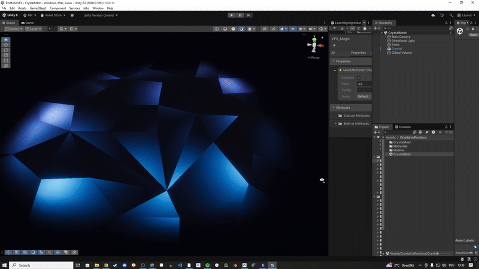
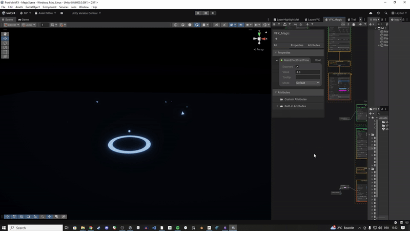
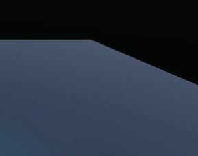

VFX for Games in Unity | Learning Unity VFX- and Shader-Graph
Why VFX?
It's always been something that interested me and I have made it my goal to build a strong portfolio! Games are nothing without interesting visuals and I have found in my own developing process that the visual aspect has always captured my attention most, so I have decided to focus myself on my VFX skills.

Learning the ropes
Im learning all sorts of fun tricks of the trade. This effect for example uses a clever trick using some split Uvs and a scrolling texture to create a beautiful crystal-like effect. Something I use and layer later.
Toying around on my own
Most of the effects I am making right now as a beginner focus heavily on the basics. I am trying to understand the building blocks and what makes VFX pop. Timing and energy of impact are a big focus.

Textures and a personal pipeline
This one isnt entirely finished but we can find that crystal reflection in the end of the effect. Soo pretty!
A big thing for a lot of these effects is the creation of my own textures and getting a feel for what works with scaling, stretching and movement.

Starting out
Since I am still starting out, I am trying to learn as much as I can about all aspects of VFX-creation in Unity. Applying my knowledge with the animation system things I learned in the Creative Core course on Unity learn has been really rewarding.